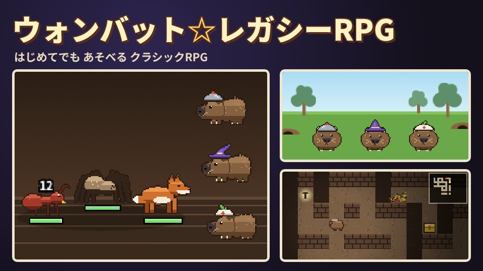
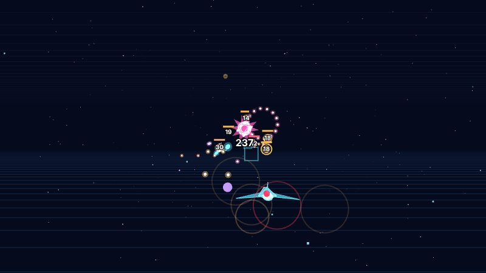

第1回 1/10（日） かんがえる
何が楽しいかは、
誰が決める？
紙に、ゲームの設計図をかく
親子でAIゲームづくり講座
この講座の問い
何が楽しいかは、
誰が決めるんだろう？
「自分たちが決めたこと」に注目しよう。
全3回の流れ
考えて、作って、直して見せる
第1回 1/10
かんがえる
紙に設計図
第2回 1/17
つくる
AIにたのむ
第3回 1/24
なおす
みせる
遊んで直す
毎回 日曜 10:00〜12:00 小川パレット5階
今日の流れ（120分）
ゴール：AIに渡す「お願いの文」
| 5分 | はじめに |
| 30分 | 講義（講師紹介・サンプルの実演） |
| 5分 | ワーク前半：白紙に自由に |
| 10分 | 中間講義：設計図で決めること |
| 50分 | ワーク後半：設計図とお願いの文 |
| 20分 | 宿題の説明・予備 |
講師紹介 1/3
おおすぎ なおや
大杉 直也
デジタル庁 ガバメントAI 源内
- 政府職員の生成AI「源内」を開発・運用
- 行政職員向けの生成AI研修の講師
- 生成AIのリスク対策ガイドブックを執筆
講師紹介 2/3 差し替え
（ふりがな）
講師2の名前
講師紹介 3/3 差し替え
（ふりがな）
講師3の名前
なぜ、この講座を？ 1/2
生成AIは、ここまで来ている
いまは
- 言葉で頼むだけで
- 動くゲームができる
- コードは書かなくていい
でも
- 知らない人が、まだ多い
- まず見て、さわってほしい
このあと、実際にAIで作ったゲームを見せます
なぜ、この講座を？ 2/2
でも、何が楽しいかを決めるのは人
この講座で練習すること
- 面白さは、自分たちで考える
- ぶらさない点を、先に決める
- 行き詰まったら、作り直す
ゲームは題材。仕事や勉強でAIを使うときも同じ
今回作るゲーム
HTMLファイル1つのゲーム
- スマホやPCのブラウザで遊べる
- インターネットがなくても動く
- ファイルを渡せば、人にも遊んでもらえる
今回はできない：ランキングの共有、ログイン
（サーバーの準備が必要）
実演
AIで作ったゲームを見てみよう

つみきドカーン！

ウォンバットRPG

INFINITE SHOT 3D
サンプル一覧
見るところ：どこが面白い？ どうなったら終わり？
AIと人の分担
任せること、自分で決めること
AIに任せる
- コードを書く
- 画面や動きを作る
- 不具合を直す
- 案を出す
自分で決める
- 何が面白いか
- ルール、勝ち負け
- ちょうどいい難しさ
- その題材で大丈夫か
ワークの前に
親子のルールは、ひとつだけ
入力する前に、
必ず子どもに確認する。
ワーク前半（5分）
白紙に、自由に書いてみよう
- どんなゲーム？
- どこが楽しい？
- 絵で描いてもいい
うまくまとまらなくて大丈夫
中間講義
「面白いゲームを作って」
とだけ頼んだら？
何が起きる？
それらしいものはできる。
でも、思っていたものとは限らない。
だから
頼む前に、自分たちで決めておく。
紙に書けば、そのまま渡せる。
中間講義
設計図で決めておくこと
- 面白い点
- 終わり方
- イメージ図
- ひとことで言うと
- 操作・ルール
- 遊ぶ端末
- 本物らしさ
- この題材で大丈夫？
中間講義
講師も、先に決めればよかった
遊ぶ端末
「スマホで」と言ったら、AIに「練習にならない」と言われた
本物らしさ
「本当にありそうなコースに」と伝えた
題材
途中で、子ども向けでないと気づいてやめた
中間講義
「ぶらさない点」と「最小版」
ぶらさない点
これだけは変えない。
変えたくなったら、最初から考え直す。
最小版
「これがあれば遊べる」
だけのゲーム。
第2回は、最小版まで。
広げるのは、遊べてから
最後の10分
お願いの文に書き写す
今日はAIに送りません。送るのは第2回
宿題（1/17までに）
おうちで1つ、作ってみる
1
保護者が
アカウントを作る
2
簡単なゲームを頼む
例：じゃんけん
3
保存して、
開いてみる
今日の設計図のゲームは、まだ頼まない
宿題
どのAIを使う？（おすすめ順）
| 1 Claude | 設定で「コード実行とファイル作成」をオン |
| 2 ChatGPT | ゲームは「キャンバス」に出る |
| 3 Gemini | 入力欄の［Canvas］を選んで頼む |
ほかのAIも持ち込みOK。ただし講師はサポートできません
画面は2026年11月時点。変わることがあります
次回
1/17（日）つくる
動くゲームにします
設計図とお願いの文を持ってきてください